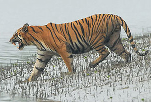

Sundarbans (West Bengal)
 |
 |
 |
Home to the unique royal Bengal tiger, the Sundarbans is a UNESCO World Heritage Site, inscribed in 1987. One of the largest mangrove forests in the world, the Sundarbans forests cover an area of 10,000 sq km and lie on the delta of Ganga, Brahmaputra and Meghna rivers in the Bay of Bengal. The mist-shrouded area is rife with a variety of flora and fauna, including 260 species of birds and other threatened species like the estuarine crocodile and the Indian python.
A cluster of low-lying islands in the Bay of Bengal spread across India and Bangladesh, make up the Sundarbans, which is among the largest active delta regions in the world. The Sundarbans got its name from a mangrove plant called 'sundari', which translated means a beautiful forest. The area is riddled with rivers and various creeks and tributaries criss-cross through it. Sundarbans was declared a tiger reserve in 1974.